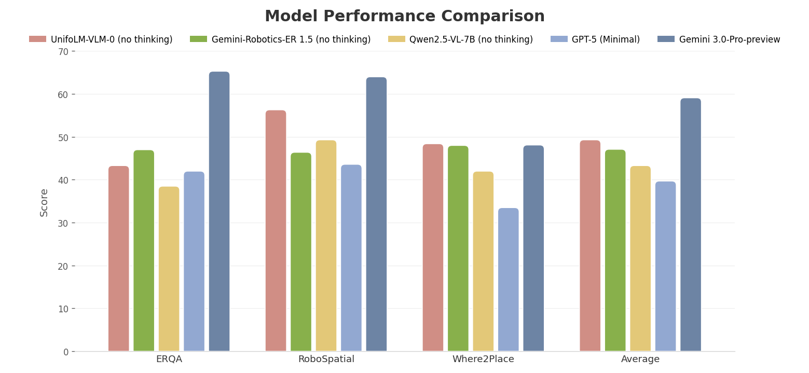

UnifoLM-VLA-0 is a Vision–Language–Action (VLA) large model in the UnifoLM series, designed for general-purpose humanoid robot manipulation. It goes beyond the limitations of conventional Vision–Language Models (VLMs) in physical interaction. Through continued pre-training on robot manipulation data, the model evolves from "vision-language understanding" to an "embodied brain" equipped with physical common sense.
UnifoLM-VLA-0 是 UnifoLM 系列下面向通用人形机器人操作的视觉-语言-动作（VLA）大模型。该模型旨在突破传统 VLM 在物理交互中的局限，通过在机器人操作数据上的继续预训练，实现了从通用"图文理解"向具备物理常识的"具身大脑"的进化。
To address the requirements for instruction comprehension and spatial understanding in manipulation tasks, the model deeply integrates textual instructions with 2D/3D spatial details through continued pre-training, substantially strengthening its spatial perception and geometric understanding capabilities. 针对操作类任务中对指令理解与空间感知的高要求，模型通过继续预训练深度融合了文本指令与2D/3D空间细节，增强了模型的空间感知能力。
By leveraging full dynamics prediction data, the model achieves strong generalization across diverse manipulation tasks. In real-robot validation, it can complete 12 categories of complex manipulation tasks with high quality using only a single policy. 构建了全链路动力学预测数据，模型具备更好的任务泛化性。在真机验证中，仅需单一策略即可高质量完成 12 类复杂的操作任务。
Building on the open-source Qwen2.5-VL-7B backbone, we perform continued pre-training using a multi-task dataset that spans both robotic and general-purpose scenarios. The dataset integrates diverse supervision signals, including 2D detection and segmentation, hierarchical task decomposition, 3D object detection, spatial reasoning, and trajectory prediction. This multi-dimensional training setup substantially strengthens the model's alignment between geometric space and semantic logic.
For manipulation tasks, we systematically curated open-source datasets, including Open-X and Galaxea, ultimately retaining approximately 340 hours of high-quality real-robot data for discrete action prediction training. Building on this, the model integrates action chunking prediction, as well as forward and inverse dynamics constraints, to achieve unified modeling of action sequences. This endows the VLM with a deep understanding of the physical interaction dynamics between robots and objects, enabling long-horizon action planning and decision-making.
基于 Qwen2.5-VL-7B 开源模型，我们构建了覆盖机器人与通用场景的多任务数据集，并开展持续预训练。该数据集涵盖 2D 检测与分割、任务层级分解、3D 目标检测、空间位置推理及轨迹预测等多维数据，有效提升了模型对几何空间与语义逻辑的对齐能力。
针对操作类任务，我们对 Open-X 与星海图开源数据集进行了系统化清洗，最终仅利用约 340 小时的真机数据，进行离散动作的预测训练。在此基础上，模型集成了动作分块预测，以及前向与逆向动力学约束，实现对动作序列的统一建模，从而使 VLM 具备对机器人与物体物理交互规律的深度理解能力，并支持长时序动作规划与决策。
After conducting continued pre-training on the aforementioned datasets, we obtained UnifoLM-VLM-0. This model demonstrates significantly enhanced spatial reasoning capabilities and reliable multimodal perception performance across diverse task scenarios. Relevant zero-shot testing examples are as follows: 基于上述构建的数据集开展持续预训练后，我们获得了 UnifoLM-VLM-0。该模型在多类任务场景下展现出显著增强的空间推理能力与可靠的多模态感知性能，相关零样本测试示例如下：
We evaluated the model across three spatial understanding benchmarks. The results indicate that the model achieves significant improvements in spatial perception and understanding capabilities compared to Qwen2.5-VL-7B, and the model is competitive with Gemini-Robotics-ER 1.5 in "no thinking" mode. 我们在三个空间理解基准上对模型进行了评估，结果显示：模型在空间感知与理解能力上较 Qwen2.5-VL-7B 有显著提升，并且在 “no thinking” 模式下可比肩 Gemini-Robotics-ER 1.5。

We developed UnifoLM-VLA-0 by incorporating an Action Head into the UnifoLM-VLM-0 model. Validated through multi-task training in both simulation environments and real-robot experiments, the results highlight the model's broad capability to handle diverse tasks with a single model checkpoint. On the LIBERO simulation benchmark, UnifoLM-VLA-0 achieved highly competitive performance as outlined below: 我们在 UnifoLM-VLM-0 模型的基础上集成了动作预测头（Action Head），从而构建出 UnifoLM-VLA-0。经由仿真环境与真机实验的多任务训练验证，结果显示该模型具备单模型处理多任务的通用能力，在 LIBERO 仿真基准测试中，我们的多任务模型取得了接近最优的性能。
| Model | LIBERO-Spatial | LIBERO-Object | LIBERO-Goal | LIBERO-Long | Average |
|---|---|---|---|---|---|
| UnifoLM-VLA-0 | 99.0 | 100 | 99.4 | 96.2 | 98.7 |
| EO1 | 99.7 | 99.8 | 99.2 | 94.8 | 98.2 |
| X-VLA | 98.2 | 98.6 | 97.8 | 97.6 | 98.1 |
| OpenVLA-OFT | 97.6 | 98.4 | 97.9 | 94.5 | 97.1 |
| GR00T-N1.6 | 97.7 | 98.5 | 97.5 | 94.4 | 97.0 |
| π0.5 | 98.8 | 98.2 | 98.0 | 92.4 | 96.9 |
| MemoryVLA | 98.4 | 98.4 | 96.4 | 93.4 | 96.6 |
| InternVLA-M1 | 98.0 | 99.0 | 93.8 | 92.6 | 95.9 |
| F1 | 98.2 | 97.8 | 95.4 | 91.3 | 95.7 |
| π0.5-KI | 98.0 | 97.8 | 95.6 | 85.8 | 94.4 |
| π0 | 98.0 | 96.8 | 94.4 | 88.4 | 94.4 |
| GR00T-N1 | 94.4 | 97.6 | 93.0 | 90.6 | 93.9 |
| CogACT | 97.2 | 98.0 | 90.2 | 88.8 | 93.2 |
| π0 + FAST | 96.4 | 96.8 | 88.6 | 60.2 | 85.5 |
On the Unitree G1 humanoid robot platform, we developed a high-quality real-robot dataset covering 12 categories of complex manipulation tasks and conducted unified end-to-end training for UnifoLM-VLA-0. Empirical results demonstrate that the model can reliably complete all 12 tasks using a single policy checkpoint, maintaining stable performance and robust anti-interference capabilities even under external disturbances. The following videos showcase the real-robot performance of UnifoLM-VLA-0 on these 12 diverse manipulation tasks: 在宇树 G1人形机器人平台上，我们构建了覆盖 12 类复杂操作任务的高质量真机数据集，并基于此对 UnifoLM-VLA-0 进行单一策略网络的统一端到端训练。真机实验结果表明，该模型能够在同一策略 checkpoint 下，稳定完成全部 12 项任务，在外部扰动条件下仍保持良好的执行鲁棒性与抗干扰能力。UnifoLM-VLA-0 在 12 个复杂操作任务 上的真机运行效果视频如下：